Recent work
Built in studio. Shipped every week.
A live cut of what's coming out of the JourneyWell channel — episodes, reels, and shorts, pulled straight from the studio.
Open the channel
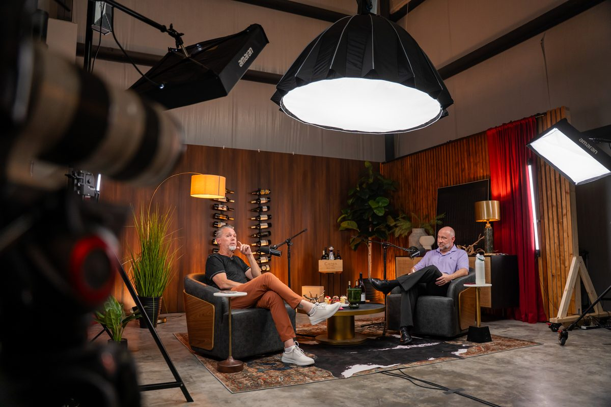
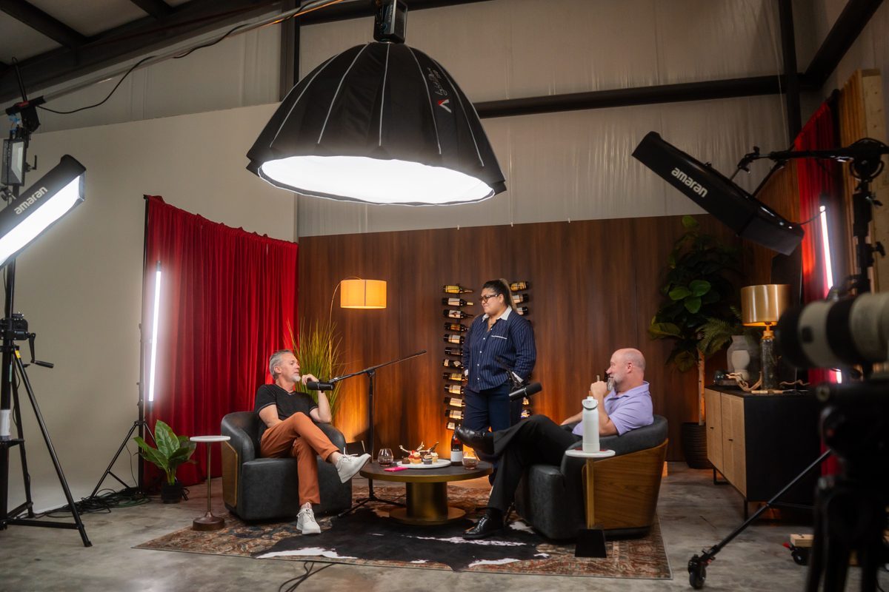
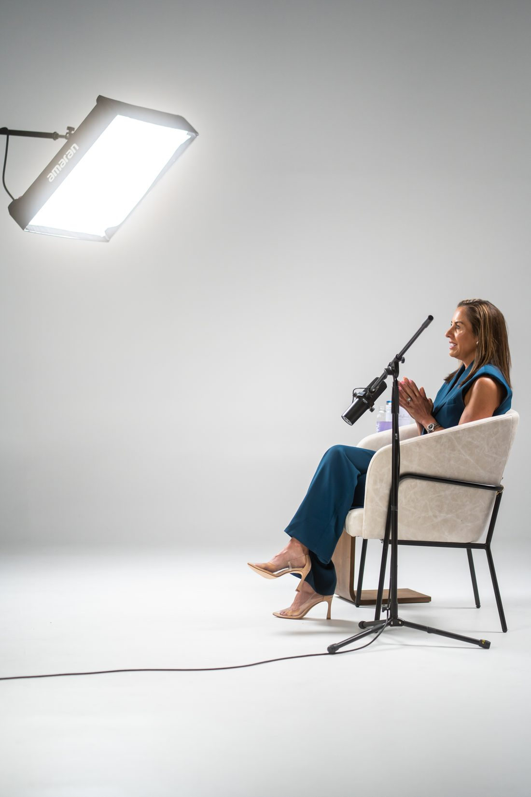

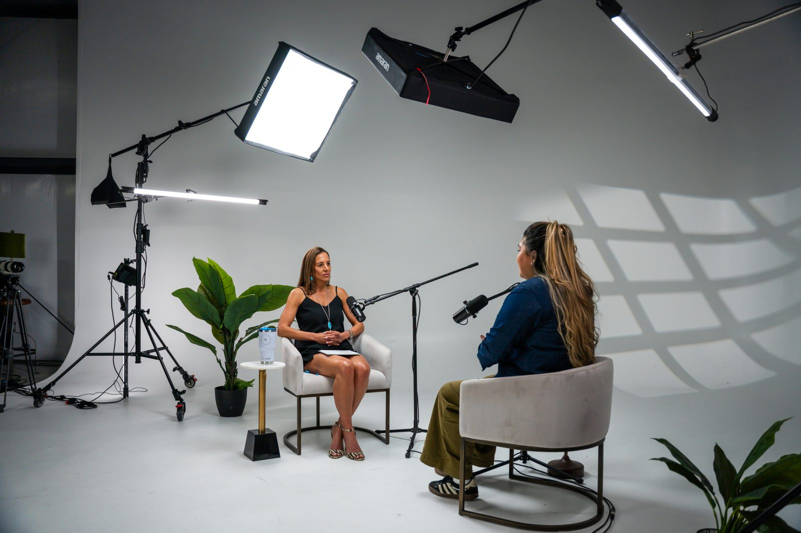
A live cut of what's coming out of the JourneyWell channel — episodes, reels, and shorts, pulled straight from the studio.
Open the channel



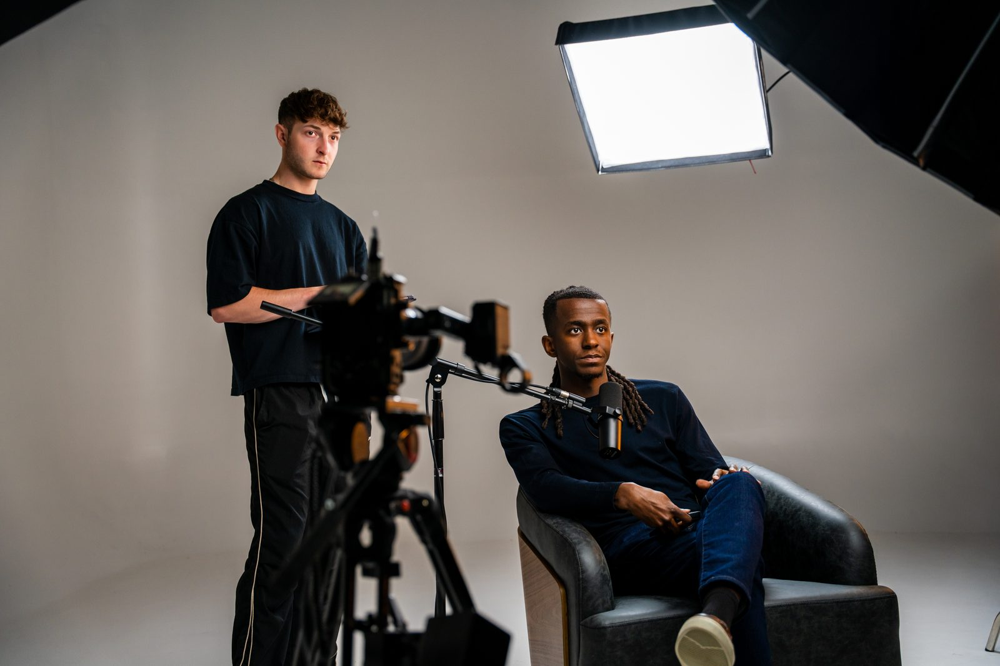
Pick the doorway that matches where you are. They all flow into the same system.
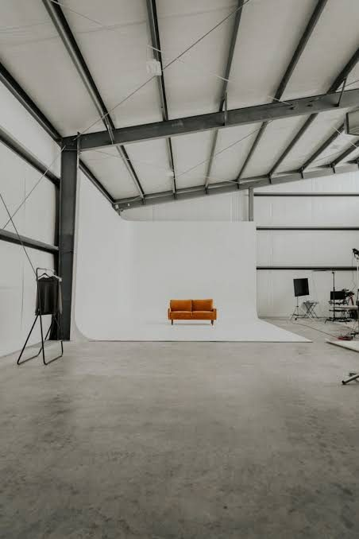
Walk in, sit down, walk out with a finished episode. Engineer, lighting, masters delivered in 48 hours.
Book a session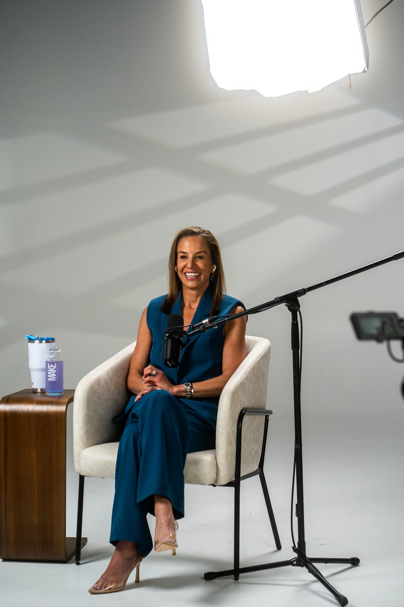
Concept to first ten episodes. Production, branding, and distribution — handled end-to-end by our team.
Start your show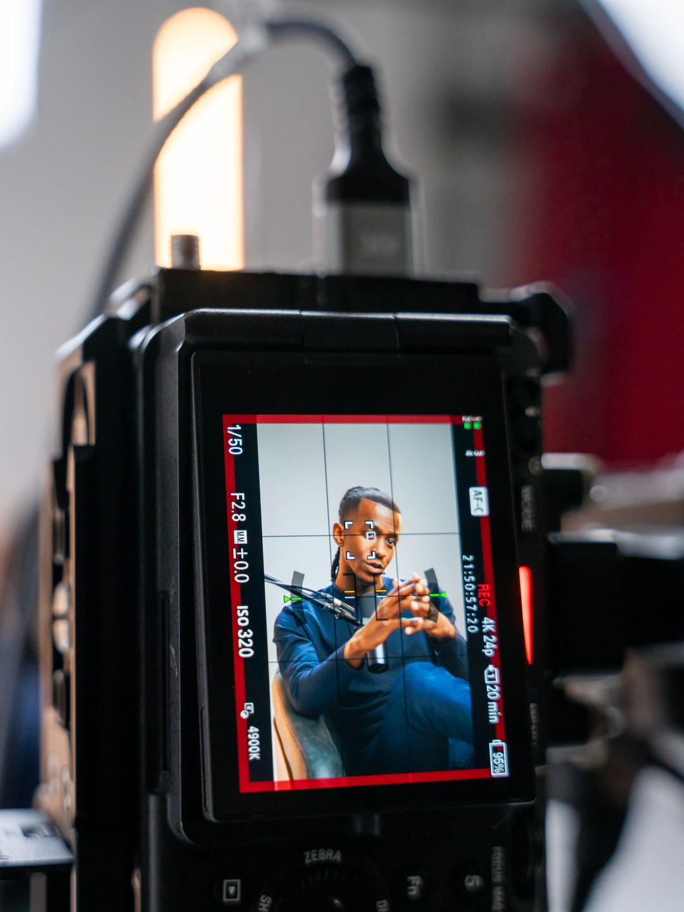
The full system. One recording becomes thirty-plus pieces of content across every platform you show up on.
See the systemSmile Spa — a podcast every two weeks, eight clips per episode, and a newsletter driving 12% of bookings.
Bonvenu Bank — a 5-figure shoot turned into a quarter of weekly content across every platform their customers use.
She's Built Different — concept to launched podcast in 14 days, 7 episodes shipped.
No black boxes. Here's exactly what happens between booking the studio and the day your content lands on every platform.
Walk into the studio. Sit down. We handle audio, video, lighting, the rest.
Editorial team cuts the episode, masters audio, designs the visual identity for the show.
Episode goes live across Spotify, Apple, YouTube — with show notes, chapters, and SEO.
The Authority System spins one episode into thirty-plus pieces of social, written, and video content.
Our Baton Rouge studio is where founders stop planning and start producing. Mic up, cameras rolling, content in the vault by Friday.
JourneyWell didn't just produce a podcast. They built our content engine. Three months in, we'd shipped more than I had on social in two years.
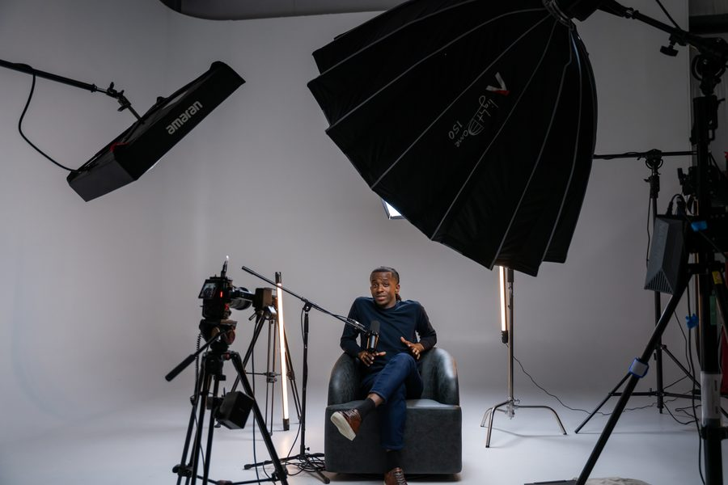
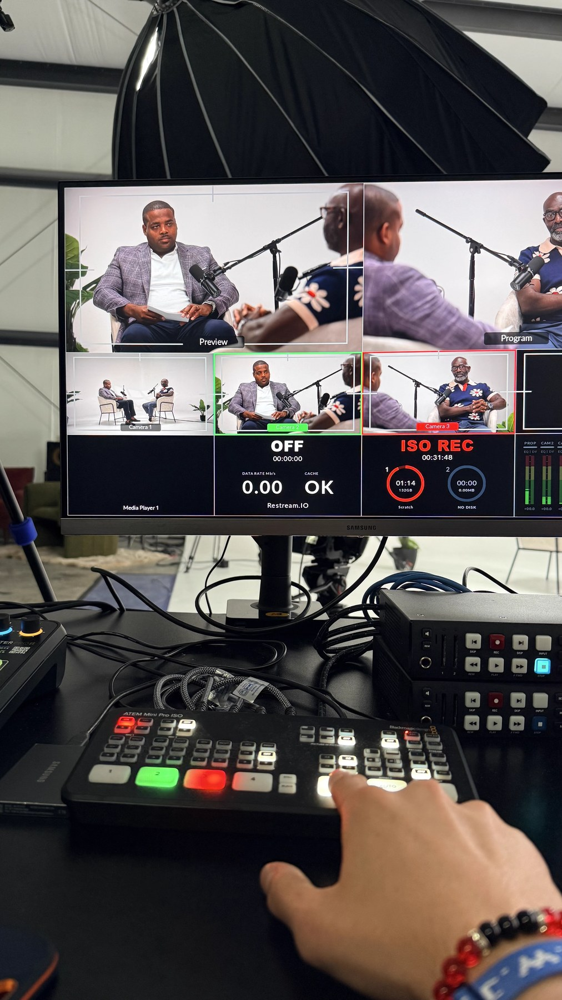
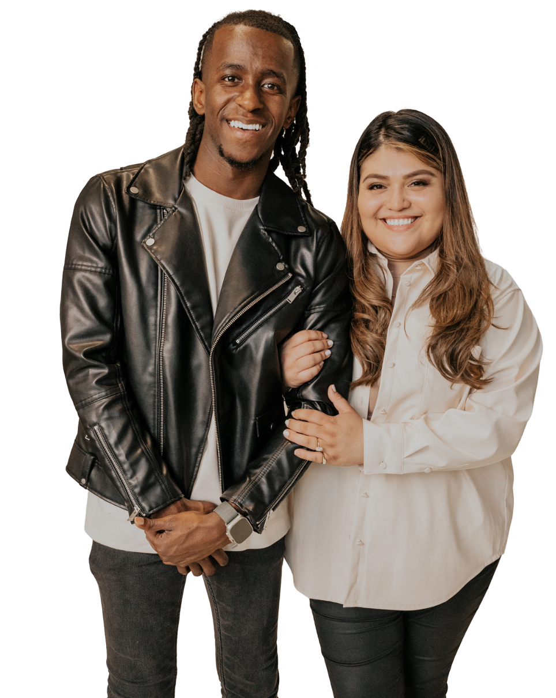
JourneyWell is led by Tim & Melodie Simmons. We started the studio in 2022 because the gap between "DIY content" and "agency content" was eating founders alive. Today we run a small team out of Baton Rouge, producing, editing, and shipping content across every platform our clients show up on.
We work with founders, operators, and brands who actually want to be seen — and aren't willing to wait six months between episodes to do it.
Read our storyHonest about what we are and aren't. We're not the cheapest option, and we're not for everyone. Here's the picture.
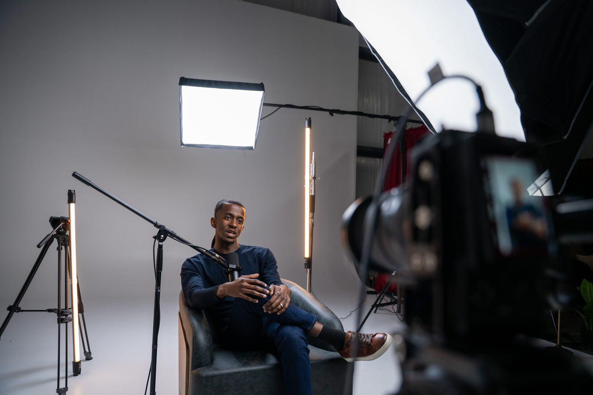
Whether you need a single studio session or a full content system that runs without you — start the conversation in 30 seconds.